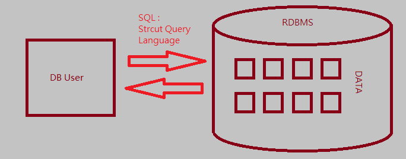
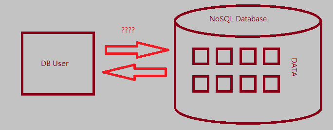
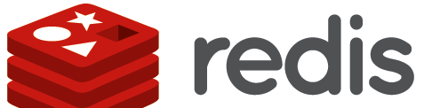
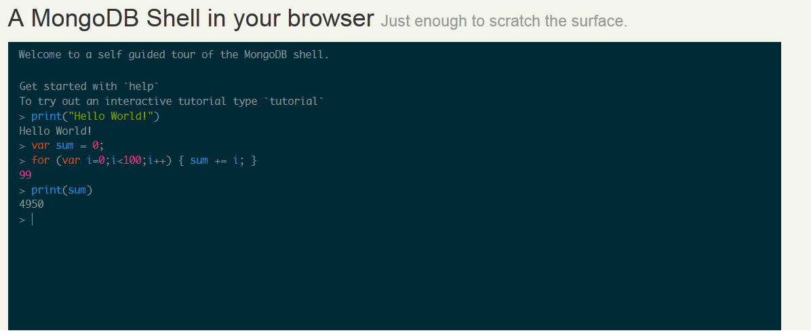

什么是数据库? WTF Database
- 我们需要一个
工具来保存和管理一些资源 - 这个工具就叫
数据库 - 被管理的资源称之为
数据

GitHub: @Ralph-Wang
Blog : http://ralph-wang.github.io
Weibo: @_漏斗
嘁, 打个酱油
工具来保存和管理一些资源数据库数据
数据库SQL 来管理数据insert into tbl (id, name) values (1, 'string');
select * from tbl where f1 = 1;
update tbl set f1 = f1 + 10 where f1 = 1;
delete from tbl where f1 = 11;



memcached

Redis 
MongoDB


var name = "Ralph-Wang";
var age = 25;
if (1 === 2) {
age =20;
}
var sum = 0;
for (var i=0; i < 10; i++) {
sum += i;
}{
"key" : "value",
"num" : 1024,
"list" : [1, 2, 3]
}

db.collection.insert(document)db.collection.findOne(query);
db.collection.find(query);db.collection.update(query, document)db.collection.remove(query)db.collection.find({name : /Ra.*ph/});db.collection.find({age : { $gt : 22}});
db.collection.find({age : { $lt : 30}});
db.collection.find({age : {$gt : 22}, {age : {$lt : 30}}}});
db.collection.find({$or : [age : {$gt : 30}, {age : {$lt : 22}}]});db.collection.find().sort({age : 1});
db.collection.find().skip(2);
db.collection.find().limit(1);
db.collection.find().sort({age : 1}).skip(2).limit(1);db.collection.update({}, {$inc : {age : 1}});
db.collection.update({}, {$mul : {age : 2}});
db.collection.update({}, {$set : {name : 2}});db.collection.update({}, {$set : {name : 2}, {multi : true}});
db.collection.update({}, {$set : {name : 2}, {upsert : true}});
db.collection.update({}, {$set : {name : 2}, {multi : true, upsert : true}});import MySQLdb
def connect_to_MySQL()
conn = #connect object to MySQL
return conn
try:
conn = connect_to_MySQL()
cur = conn.cursor()
cur.execute('select * from user where name=' % name) # 查询用户
cur.close()
conn.close()
except MySQLdb.Error:
print "oops, mysql error"import pymongo
conn = pymongo.MongoClient('mongodb://localhost:27017') # 连接服务器
db = conn.test # 选择数据库
tbl = db.tbl # 选择集合
doc = tbl.find_one()
print doc目录结构
.
├── main.py
├── MsgDAO.py
├── README.md
├── tests.py
└── views
└── index.tplclass MsgDAO(object):
'''MsgDAO: accesser to database msg in mongodb'''
def __init__(self, db):
'''Construct Method'''
def _get_model(self):
'''private method get document model'''
def insert(self, detail):
'''insert : insert method'''
def get(self, detail='', is_answered=None, num=0):
'''get : query method'''
def count(self, is_answered=NOT_ANSWERED):
'''count : count documents'''
def up(self, _id):
'''up : up a Question'''
def answer(self, _id):
'''answer: answer a Question''''Thanks' : 'End'})/
#